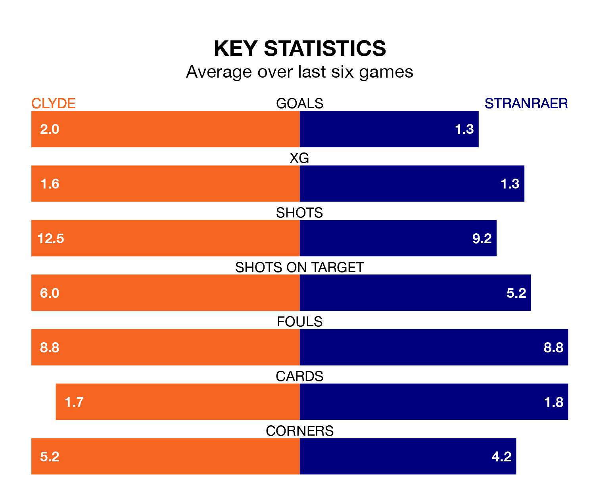

Saturday's match at the Fountain of Youth Stadium sees the league's two bottom sides face each other, as rock-bottom Clyde host Stranraer.
Clyde have picked up 28 points from their first 28 League Two games, with six wins and 10 draws.
That is three points less than Stranraer have collected, having won eight and drawn seven.
In the last 10 years, Clyde and Stranraer have played each other on nine occasions. Clyde won three of them, Stranraer four, and they drew twice.
On average, the Bully Wee scored 1.9 goals and Stranraer 1.8 in those matches.
Their last meeting was on February 10, when Stranraer won 2-0 at home.
With 36 goals in 31 games so far this season, Stranraer are scoring at below the league average rate with 1.2 goals per game. And they are conceding more than average, letting in 50 goals at a rate of 1.6 per game.
Clyde, meanwhile, are average scorers, with 1.3 goals per game. They have conceded 1.8 goals per game.
The Bully Wee are in mixed form in League Two, with three wins and a draw from their last six games.
With a win and two draws over that period, the away team's form is worse – they have taken five points from 18, compared to the hosts' 10.
In Martin Rennie, Clyde have one of the league's most on-form strikers so far this season. He has notched 10 goals in 25 appearances, to sit fifth in the scoring charts.
Stranraer's top scorers, with five goals each, are Deryn Lang and Thomas Orr.
Clyde's last match was on Saturday, a 4-1 loss against Peterhead, with Robbie Leitch getting the goal for the Bully Wee.
Stranraer drew 1-1 with Bonnyrigg Rose Athletic last time out, also on Saturday, with Lang on the scoresheet.
Saturday's match will be refereed by Ryan Lee, who has taken charge of 13 League Two games so far this season, issuing two red cards and booking 44 players. He has awarded three penalties.
The last Stranraer game Lee refereed was the 1-1 draw at home against Bonnyrigg Rose Athletic on March 30. He is yet to oversee a match featuring Clyde this season.
Updated: 16:41 (UTC), 04/04/24